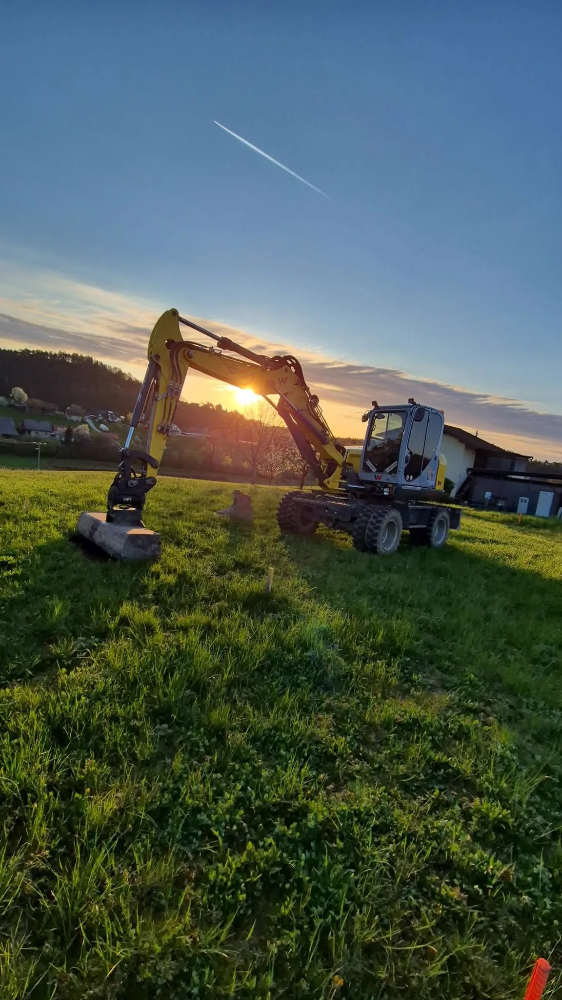
Zemeljska dela od izkopa do tlakovanja.
Izkopi z gradbeno mehanizacijo, rušitvena dela, škarpe, temeljne plošče, drenaže, kanalizacija, robniki in tlakovanje – z lastnimi stroji, v Celju in okolici.
- 5,0 na Googlu
- Lastna gradbena mehanizacija
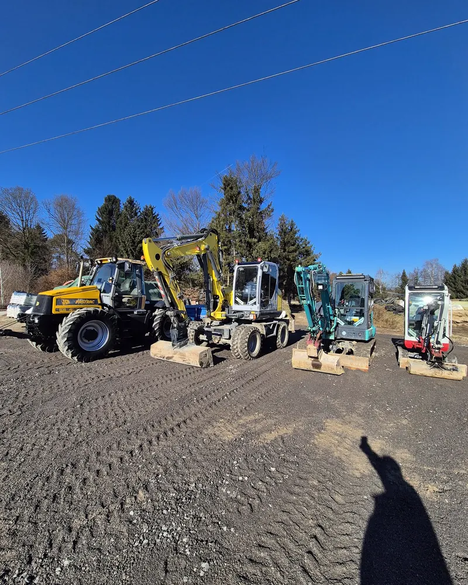
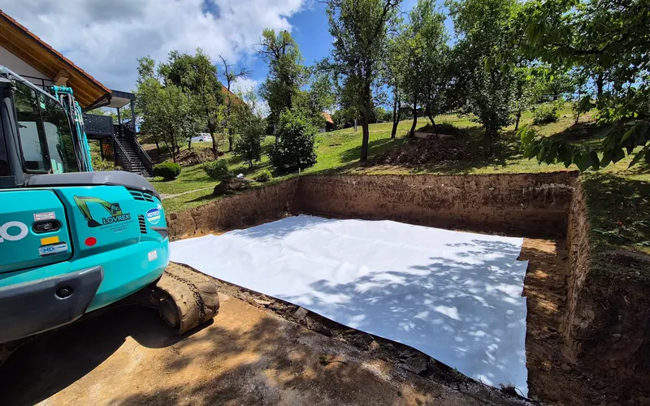
Trdna podlaga za vaš projekt.
Zemeljska dela in gradbeništvo, Damir Lovrek s.p. iz Medloga pri Celju izvaja zemeljska in gradbena dela za družinske hiše, dvorišča, gospodarske in javne objekte. Z lastno gradbeno mehanizacijo pokrijemo celoten sklop: od izkopa in odvoza zemlje do škarp, temeljnih plošč, drenaž, robnikov in tlakovanja.
Damir je na gradbišču osebno. Pogleda teren, predlaga rešitev, ki bo zdržala, in delo izpelje do konca – teren pa pusti splaniran in pospravljen.
Vozni park
- Kolesni bager Wacker Neuson izkopi, nakladanje
- Bager Kobelco na gosenicah gradbene jame
- Mini bager ozki dostopi
- Traktor JCB Fastrac prevozi materiala
Šest vrst del, ena ekipa.
Namesto da usklajujete več izvajalcev, pokličete ekipo z lastnimi stroji za celoten sklop del okoli hiše ali objekta.
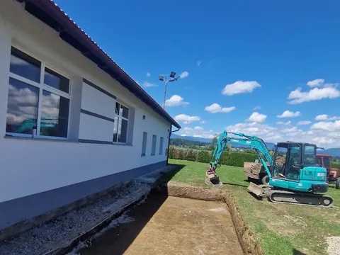
Izkopi z gradbeno mehanizacijo
Gradbene jame za hiše in kleti, jarki za temelje in komunalne vode, izkopi brežin in odvoz odvečne zemlje.
Povprašaj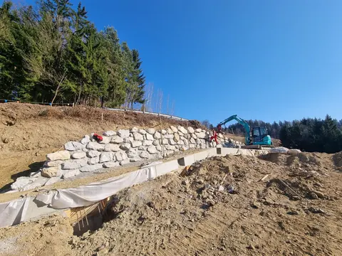
Škarpe in oporni zidovi
Kamnite zložbe in škarpe, ki zadržijo brežino – z drenažo in geotekstilom za zidom, da voda ne dela škode.
Povprašaj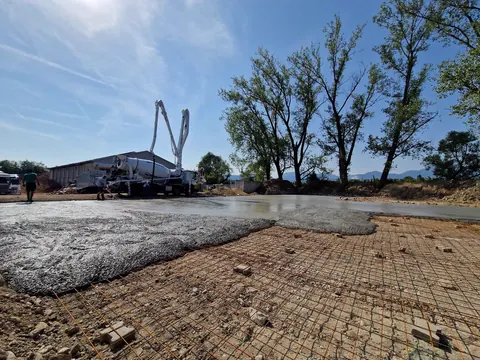
Temeljne plošče in betoniranje
Priprava in utrjevanje podlage, armatura in betoniranje temeljnih plošč ter betonskih ploščadi ob objektih.
Povprašaj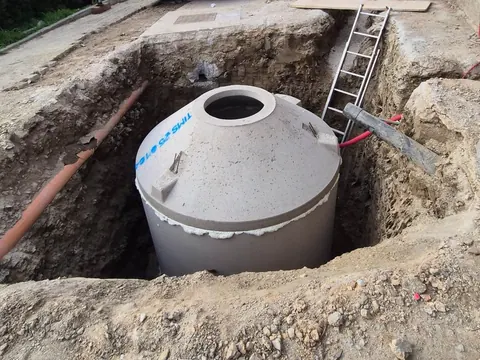
Drenaže in kanalizacija
Drenaže ob temeljih, kanalizacijski priključki in vgradnja čistilnih naprav – da voda odteka tja, kamor mora.
Povprašaj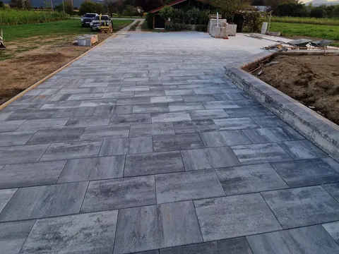
Robniki in tlakovanje
Dvorišča, dovozi in poti: izkop, utrjena podlaga, robniki in tlakovci, položeni v ravni liniji in pravem padcu.
Povprašaj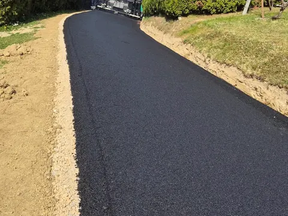
Dovozi in asfalt
Priprava in utrjevanje nosilne podlage ter asfaltiranje dovoznih poti in dvorišč.
Povprašaj- Izvajamo tudi
- Rušitvena delaRušenje manjših objektov, zidov in betonskih površin z odvozom.
- Prevozi in dobava materialaGramoz, tampon in drug material pripeljemo na gradbišče.
- Planiranje terenaUreditev okolice hiše, nasipi in fino planiranje pred zatravitvijo.
- Utrjevanje podlageValjanje in utrjevanje tampona pod plošče, dovoze in tlakovce.
Od prve lopate do zadnjega tlakovca.
Tlakovano dvorišče ob družinski hiši · zaključeno ob sončnem zahodu
Štirje koraki do urejenega terena.
Jasen dogovor na začetku, ena ekipa med delom in pospravljen teren na koncu.
Pokličete ali pišete
Opišite, kaj potrebujete. Fotografije terena nam pomagajo, da hitreje ocenimo obseg del.
031 666 826 · e-poštaOgled in ponudba
Pridemo na teren, preverimo dostop za stroje, sestavo tal in odvodnjavanje ter pripravimo ponudbo.
jasen obseg delIzvedba z lastnimi stroji
Izkop, dovoz materiala, vgradnja in utrjevanje – z lastno mehanizacijo in brez nepotrebnega čakanja.
ena ekipa za vseUrejeno in pospravljeno
Teren pustimo splaniran in očiščen, odvečno zemljo pa po dogovoru odpeljemo.
pripravljeno za naprejDela, ki govorijo sama zase.
Fotografije z naših gradbišč, razvrščene po vrsti dela. Kliknite fotografijo za povečavo.

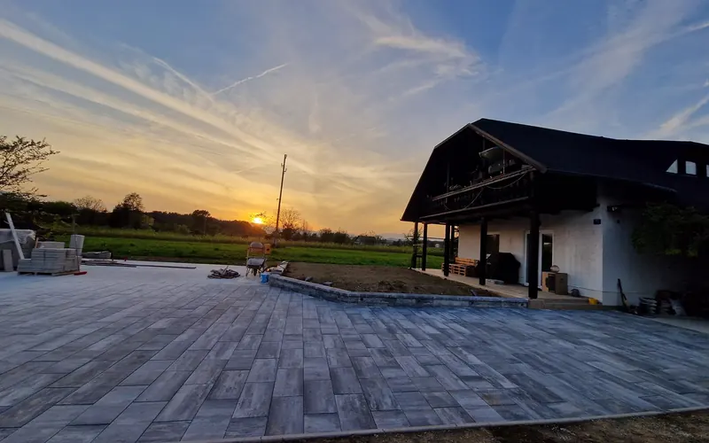
Tlakovano dvorišče ob hišiTlakovanje
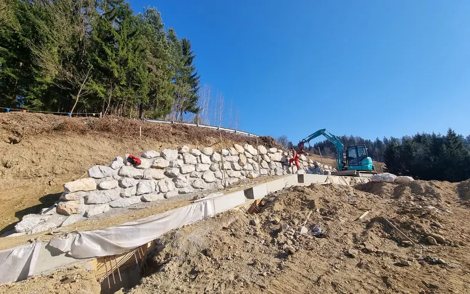
Kamnita škarpa z bagrom na gradbiščuŠkarpe
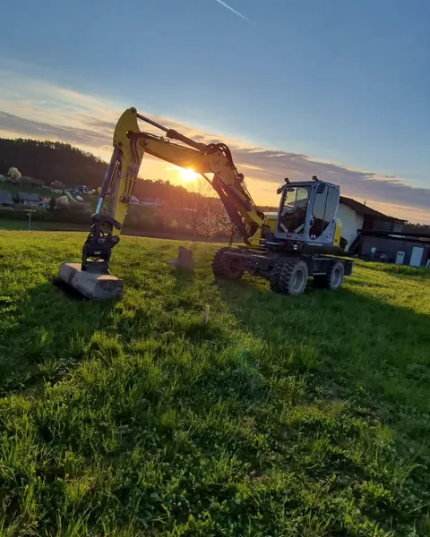
Kolesni bager Wacker NeusonMehanizacija Vgradnja čistilne napraveDrenaže in kanalizacija

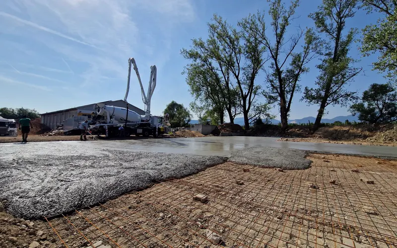
Betoniranje temeljne plošče s črpalkoTemelji in beton
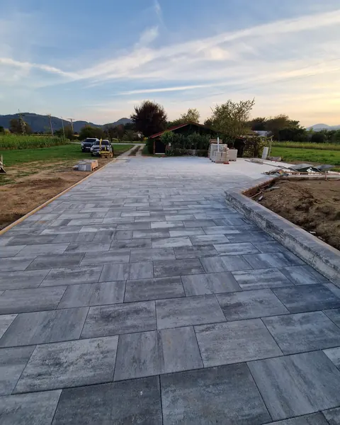
Tlakovan dovoz z robnikiTlakovanje
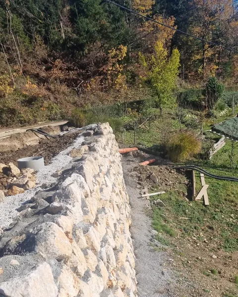
Kamnita škarpa – ČrešnjiceŠkarpe Izkop za temelje z geotekstilomIzkopi in planiranje

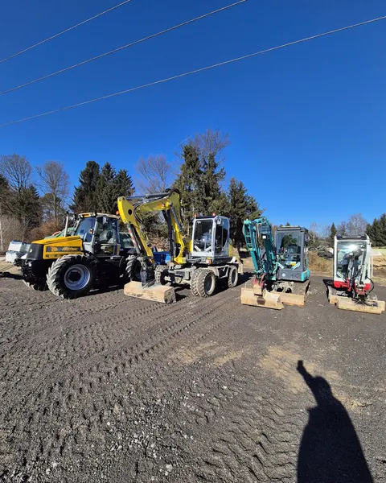
Vozni park: JCB Fastrac in bagriMehanizacija
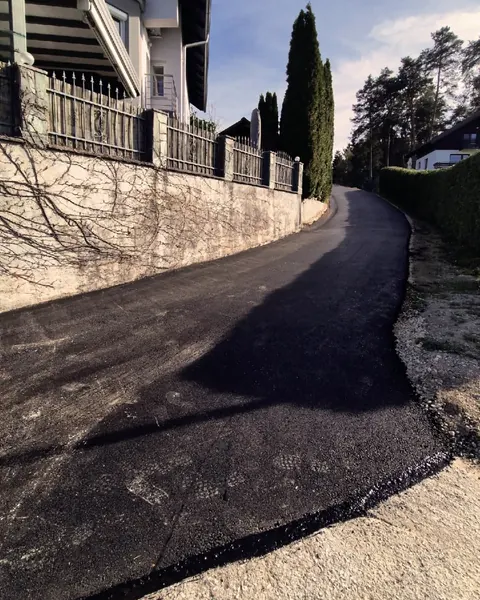
Asfaltiran dovoz ob hišiAsfalt in dovozi
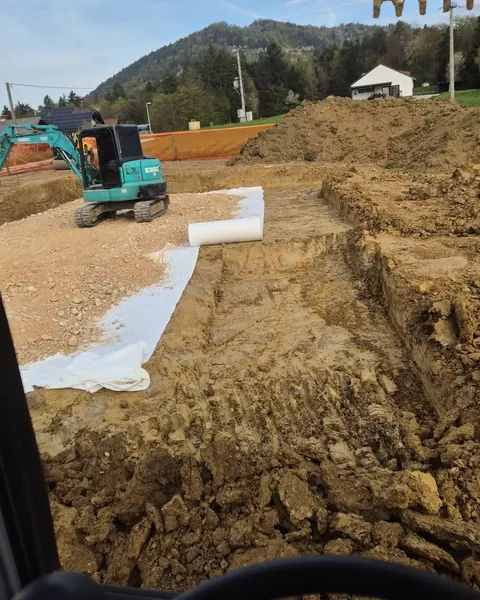
Izkop z mini bagromIzkopi in planiranje
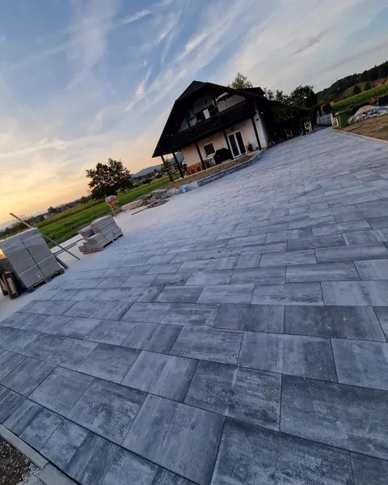
Tlakovano dvorišče pred hišoTlakovanje
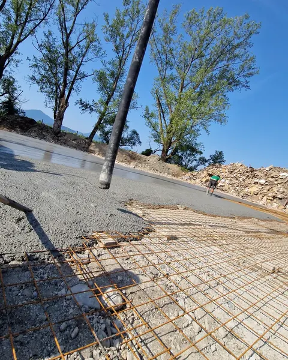
Betoniranje plošče na armaturni mrežiTemelji in beton
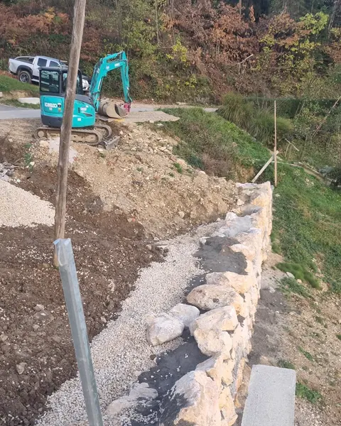
Škarpa z drenažo – Podgorje pod ČerinomŠkarpe
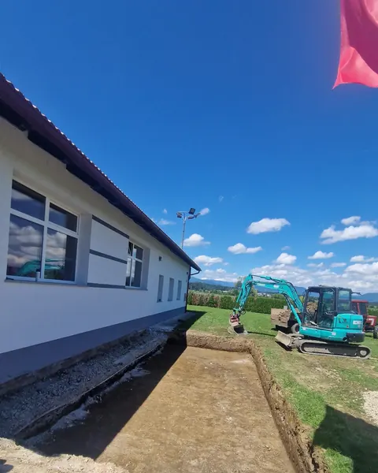
Izkop ob gasilskem domu – PGD BabnoIzkopi in planiranje
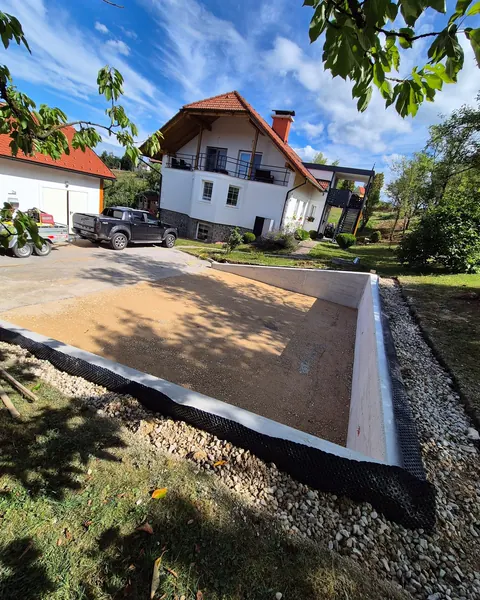
Drenaža in čepasta folija ob temeljuDrenaže in kanalizacija
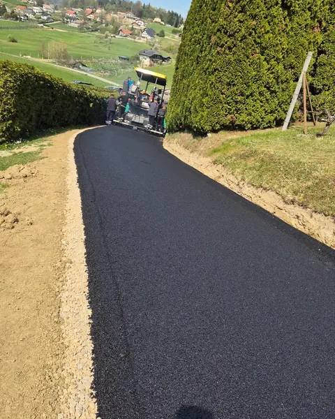
Asfaltiranje dovozne potiAsfalt in dovozi
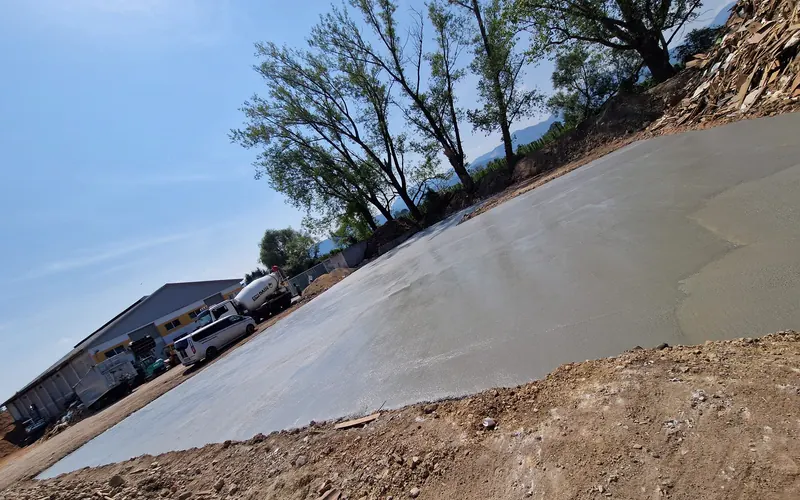
Sveže zglajena betonska ploščaTemelji in beton
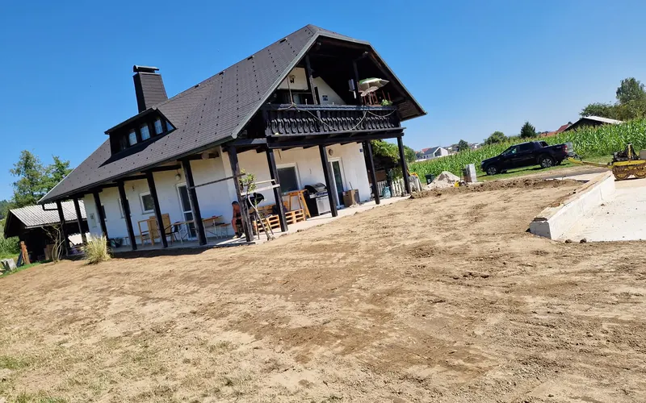
Planiranje terena ob hišiIzkopi in planiranje
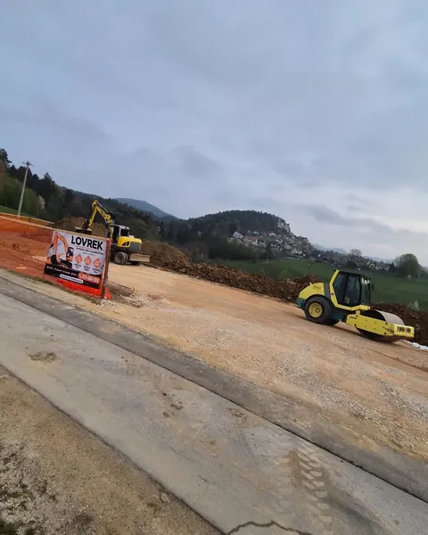
Valjanje podlage na gradbiščuMehanizacija
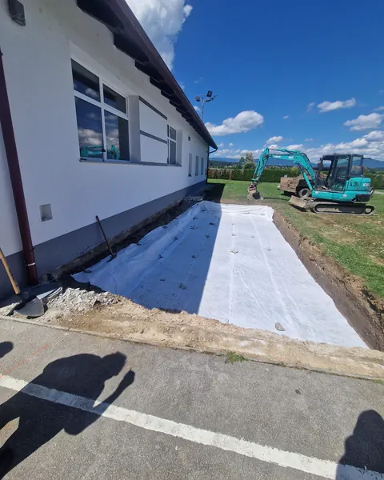
Geotekstil za podlago ob objektuIzkopi in planiranje
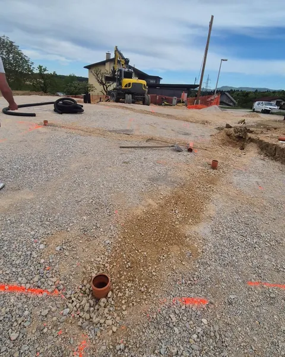
Kanalizacijski priključki v tamponuDrenaže in kanalizacija
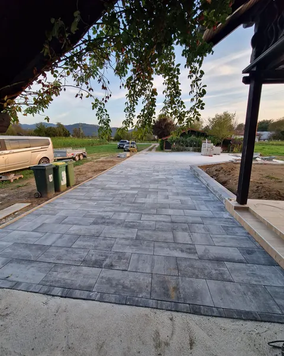
Tlakovanje pod pergoloTlakovanje
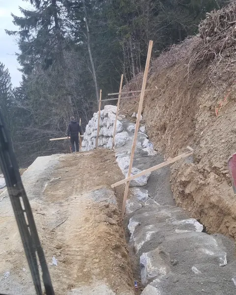
Gradnja škarpe – pogled iz kabineŠkarpe
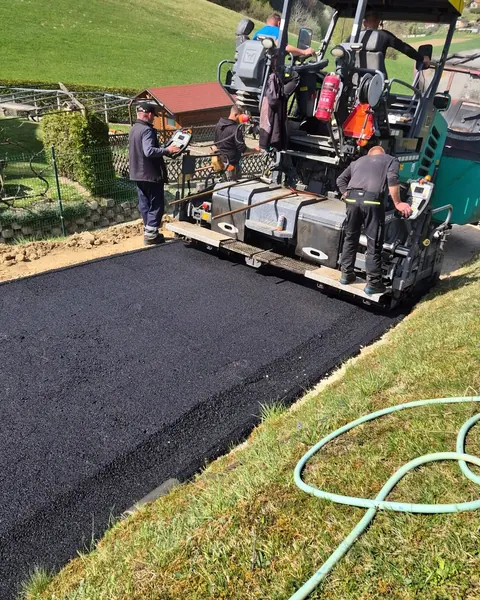
Asfaltiranje s finišerjemAsfalt in dovozi
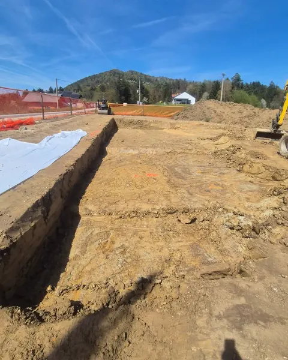
Izkop jarka za temeljeIzkopi in planiranje
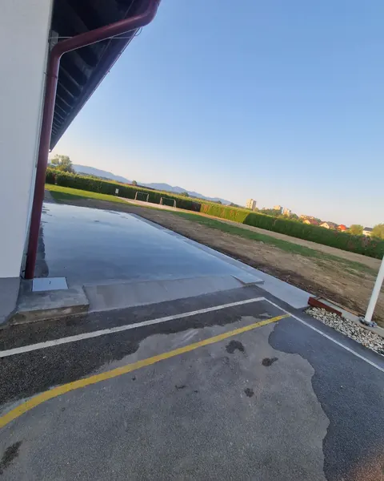
Betonska ploščad ob objektuTemelji in beton
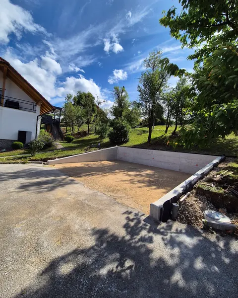
Obsip z gramozom ob temeljuDrenaže in kanalizacija
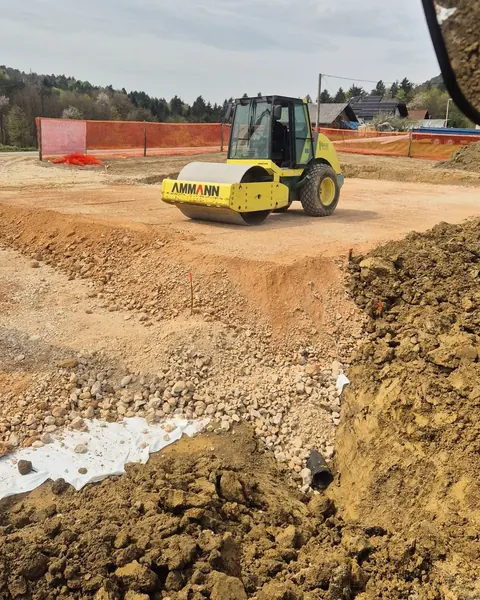
Valjar pri utrjevanju izkopaMehanizacija
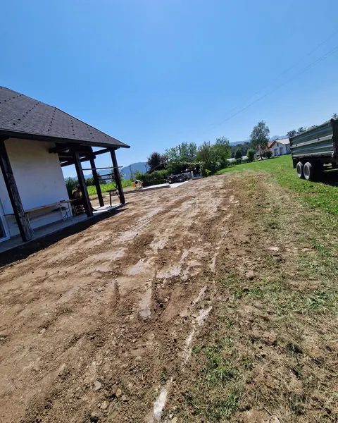
Priprava terena ob hišiIzkopi in planiranje
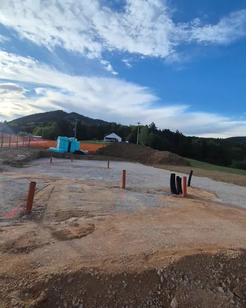
Priključki v utrjeni podlagiDrenaže in kanalizacija
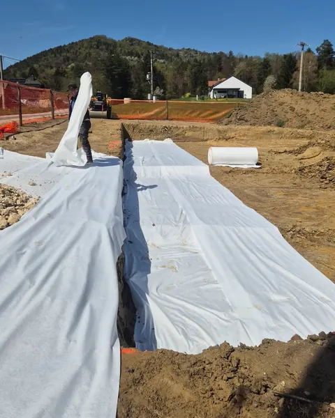
Geotekstil v izkopanem jarkuIzkopi in planiranje
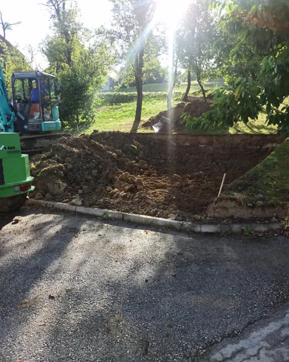
Izkop brežineIzkopi in planiranje
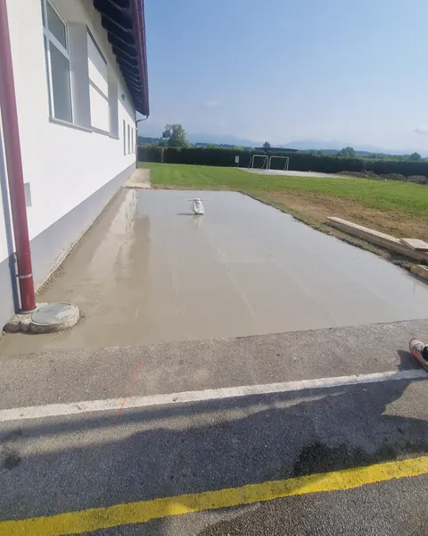
Zaključena betonska ploščadTemelji in betonDelo, ki se priporoča.
Ocena na Googlu je javna in nepopravljena, na Facebooku pa redno objavljamo fotografije z gradbišč.
ljudi spremlja naše objave z gradbišč – izkope, škarpe, betoniranja in tlakovanja.
Sledite namNapišite mnenje na Googlu.
Vaša izkušnja pomaga sosedom pri izbiri izvajalca – in nam pove, kaj delamo dobro.
Oddaj mnenjePreden pokličete.
Da. Pred večjimi deli pridemo na teren, preverimo dostop za stroje, sestavo tal in odvodnjavanje ter nato pripravimo ponudbo. Za manjša dela je pogosto dovolj, da nam pošljete nekaj fotografij.
Največ delamo v Celju z okolico in po Savinjski regiji. Za večje projekte pridemo po dogovoru tudi drugam – pokličite in se dogovorimo.
Da. Izvajamo prevoze in dobavo materiala, na primer gramoza in tampona, odvečno zemljo iz izkopa pa po dogovoru odpeljemo. Tako vam ni treba iskati še prevoznika.
Odvisno od posega. Za novogradnje in večje posege potrebujete projektno dokumentacijo, ki jo pripravi projektant; dela nato izvedemo po projektu. Če niste prepričani, preverite na svoji občini – z veseljem vam povemo, kaj smo videli pri podobnih delih.
Cena je odvisna od obsega, dostopa, sestave tal in izbranega materiala. Po ogledu ali na podlagi fotografij pripravimo ponudbo za vaš teren, zato je prvi korak kratek klic ali povpraševanje.
Delamo skozi vse leto, kadar to dopušča vreme. Betoniranje in asfaltiranje potrebujeta primerne temperature, zato termin teh del uskladimo z vremensko napovedjo. Spomladi in poleti so termini hitro zasedeni – pokličite pravočasno.
Dogovorimo se za ogled.
Pokličite ali izpolnite povpraševanje – ob kliku »Pošlji« se odpre Gmail z že pripravljenim sporočilom, ki ga samo še odpošljete.
- Telefon031 666 826
- E-poštadamir.lovrek94@gmail.com
- NaslovMedlog 23a, 3000 Celje
Delamo v Celju z okolico in po Savinjski regiji. - Delovni časPon–Pet: 8.00–16.00
Ogledi in dela po dogovoru tudi izven tega časa. - PodjetjeZemeljska dela in gradbeništvo, Damir Lovrek s.p.
Matična št.: 8670951000 · ID za DDV: SI25137247
Medlog 23a, CeljeZemljevid Google se naloži šele, ko ga odprete, saj Google pri tem nastavi svoje piškotke.
Vi imate teren. Mi imamo stroje.
Pokličite Damirja in se dogovorite za ogled – povemo, kaj je mogoče, in pripravimo ponudbo.